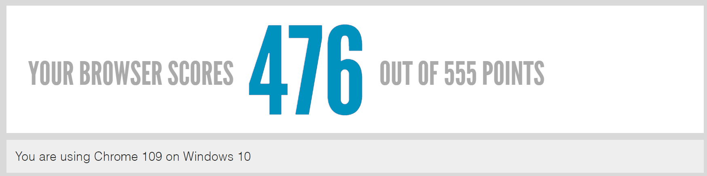

| Intereses | Proyectos relevantes |
|---|---|
|
|
Mi color favorito es el dorado
Preguntas
¿Cuál es la diferencia entre Internet y la World Wide Web?
Internet es una enorme red de computadoras en todo el mundo que están interconectadas. Esta red es la base de diversas aplicaciones como el correo electrónico, la mensajería instantánea y las videoconferencias.
Por su parte la World Wide Web (WWW) es un sistema que opera en Internet, donde se pueden transferir varios tipos de datos a través del protocolo HTTP (Protocolo de transferencia de hipertexto). Este sitio es una colección de páginas web.
¿Cuáles son las partes de un URL?
Una URL stá compuesta por un protocolo de transmisión (como HTTPS o HTTP), un nombre de dominio (como www.google.com) y una serie de parámetros que especifican ciertos elementos de ubicación en la página web.
¿Cuál es el propósito de los métodos HTTP: GET, HEAD, POST, PUT, PATCH, DELETE?
- GET: Utilizado para obtener recursos de un servidor.
- HEAD: Se utiliza para obtener información acerca de un recurso sin obtener el recurso en sí.
- POST: Se utiliza para enviar una entidad a un recurso en específico.
- PUT: Reemplaza todas las representaciones actuales del recurso de destino con la carga útil de la petición.
- PATCH: Utilizado para para actualizar parcialmente un recurso existente
- DELETE: Borra un recurso en específico
¿Qué método HTTP se debe utilizar al enviar un formulario HTML, por ejemplo cuando ingresas tu usuario y contraseña en algún sitio? ¿Por qué?
El método POST, ya que este método permite enviar informarción para procesarla. Por ejemplo, si en el formulario queremos obtener las credenciales del usuario para procesarlas (comparar si existe) o guardarlas cuando hay un registro.
¿Qué método HTTP se utiliza cuando a través de un navegador web se accede a una página a través de un URL?
El método GET, pues en este caso queremos que el servidor devuelva a la página en sí, por lo tanto eso es obtener un recurso.
Un servidor web devuelve una respuesta HTTP con código 200. ¿Qué significa esto? ¿Ocurrió algún error?
Significa que todo salió como era esperado, el recurso se obtuvo de manera satisfactoria, por lo que no ocurrió ningún problema.
¿Es responsabilidad del desarrollador corregir un sitio web si un usuario reporta que intentó acceder al sitio y se encontró con un error 404? ¿Por qué?
Un error 404 significa que el recurso no fue encontrado. Este error se encuentra en el grupo de los 4XX, lo que quiere decir que fue un error del usuario final, por lo tanto la responsabilidad de este no radica en el desarrollador.
¿Es responsabilidad del desarrollador corregir un sitio web si un usuario reporta que intentó acceder al sitio y se encontró con un error 500? ¿Por qué?
Un error 505 significa que existe un error que no permitió que se pudiera completar la solicitud del usuario. Por lo tanto, sí es responsabilidad del desarrollador, ya que esto puede deberse a ciertos problemas en el código o en la implementación de recuperación de recursos.
¿Qué significa que un atributo HTML5 esté depreciado o desaprobado (deprecated)? Menciona algunos elementos de HTML 4 que en HTML5 estén desaprobados.
Son elementos los cuales su uso ya no es recomendado porque existen alternativas mas eficientes, por lo cual ya no son mantenidos. Muchos de ellos van relacionados a que son atributos que es buena práctica agregar mediante una hoja de estilos CSS o por otras etiquetas. Algunos ejemplos los cuales deben de ser reemplazados por CSS son:
- acronym
- font
- center
- width
- height
¿Cuáles son las diferencias principales entre HTML 4 y HTML5?
| HTML4 | HTML5 |
|---|---|
|
|
¿Qué componentes de estructura y estilo tiene una tabla?
- table: Para inicializar a la tabla.
- thead: Define el espacio para los encabezados
- th: Para definir los elementos del encabezado de la tabla
- tbody: Define el contenido del cuerpo de la tabla
- tr: Define una nueva fila en la tabla.
- td: Para agregar contenido a las celdas.
- caption: Para agregar una descripción de la tabla
¿Cuáles son los principales controles de una forma HTML5?
La etiqueta input de los formularios tiene varios tipos de control que define el tipo de dato a ingresar con el atributo 'type' algunos de estos son:
- search: Campo para búsqueda
- text: Campo para texto
- lista: Elementos provenientes de un menú desplegable (usado en conjunto con datalist y option)
- tel: Campo para teléfonos
- email: Campo para correos electrónicos
- url: Campo para URL
- color: Campo para registrar un color con un menú interactivo de elección.
¿Qué tanto soporte HTML5 tiene el navegador que utilizas?
Google Chrome
Sobre el ciclo de vida y desarrollo de los sistemas de información
¿Cuál es el ciclo de vida de los sistemas de información?
- Planificación y análisis de requisitos: Se identifican los requisitos del sistema, el alcance, justificación y metodologías, y se establece un plan para su desarrollo.
- Diseño: Se identifican posibles soluciones y se evaluan para su implementación, del mismo modo se crea un diseño detallado del sistema y se definen las especificaciones técnicas.
- Desarrollo: Es el inicio de la producción, se codifica el sistema y se desarrollan las aplicaciones y bases de datos.
- Implementación: Se instala y prueba el sistema en un entorno de producción con el hardware y software elegidos.
- Operación y mantenimiento: El sistema se opera y se realiza un seguimiento para detectar y solucionar problemas.
- Evaluación y mejora: Se evalúa el sistema para determinar su eficacia y se identifican oportunidades para mejorar características como el rendimiento.
- Planeación: Se expecifica el plan del proyecto a seguir, el cual sirve de guía para obtener el producto.
- Diseño: Se crea un modelo básico del sistema basado en los requerimientos de software identificados
- Desarrollo: Se implementa la solución en código y se pueden ir desarrollando pruebas.
- Implementación: El software listo se somete a pruebas finales para poder definir si está listo para su implementación.
Referencias
- Ciclo de vida de un sistema de información: fases y componentes. (s. f.). https://blog.powerdata.es/el-valor-de-la-gestion-de-datos/ciclo-de-vida-de-un-sistema-de-informacion-fases-y-componentes
- Formularios en HTML5 - Aprende sobre desarrollo web | MDN. (2022, 30 noviembre). https://developer.mozilla.org/es/docs/Learn/Forms
- HTML5 - Deprecated Tags & Attributes. (s. f.). https://www.tutorialspoint.com/html5/html5_deprecated_tags.htm
- KeepCoding, R. (2023, 25 enero). ¿Qué es el ciclo de vida del desarrollo del sistema? KeepCoding Tech School. https://keepcoding.io/blog/ciclo-de-vida-del-desarrollo-del-sistema/
- Métodos de petición HTTP - HTTP | MDN. (2022, 29 noviembre). https://developer.mozilla.org/es/docs/Web/HTTP/Methods
- ¿Qué es una URL? - Aprende sobre desarrollo web | MDN. (2020, 17 julio). https://developer.mozilla.org/es/docs/Learn/Common_questions/Web_mechanics/What_is_a_URL
- Todd Fredrich, Pearson eCollege. (s. f.). HTTP Status Codes. https://www.restapitutorial.com/httpstatuscodes.html
- V., B. (2022, 21 diciembre). La diferencia entre HTML y HTML5. Tutoriales Hostinger. https://www.hostinger.mx/tutoriales/diferencia-entre-html-y-html5